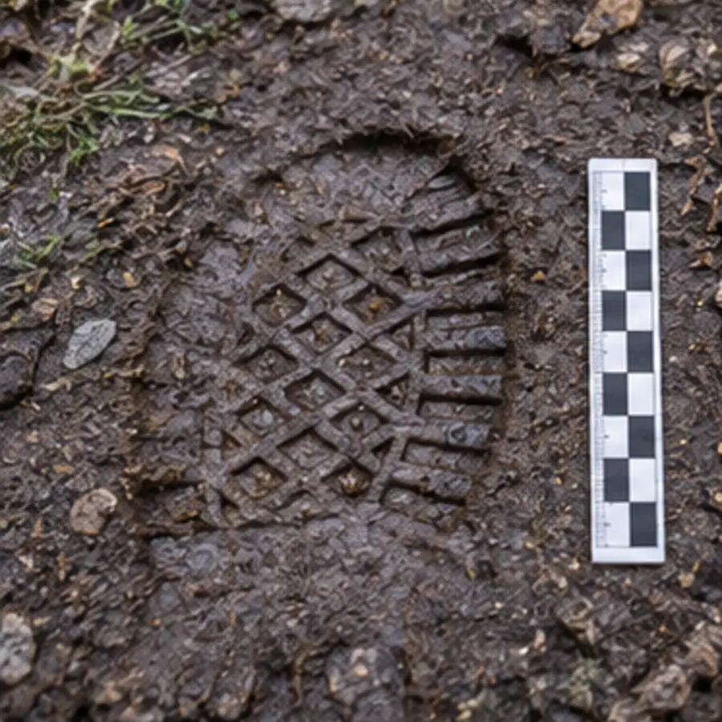
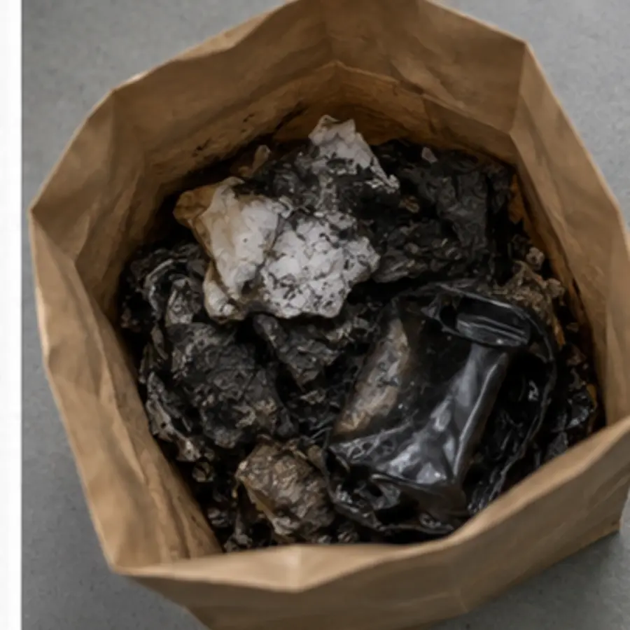
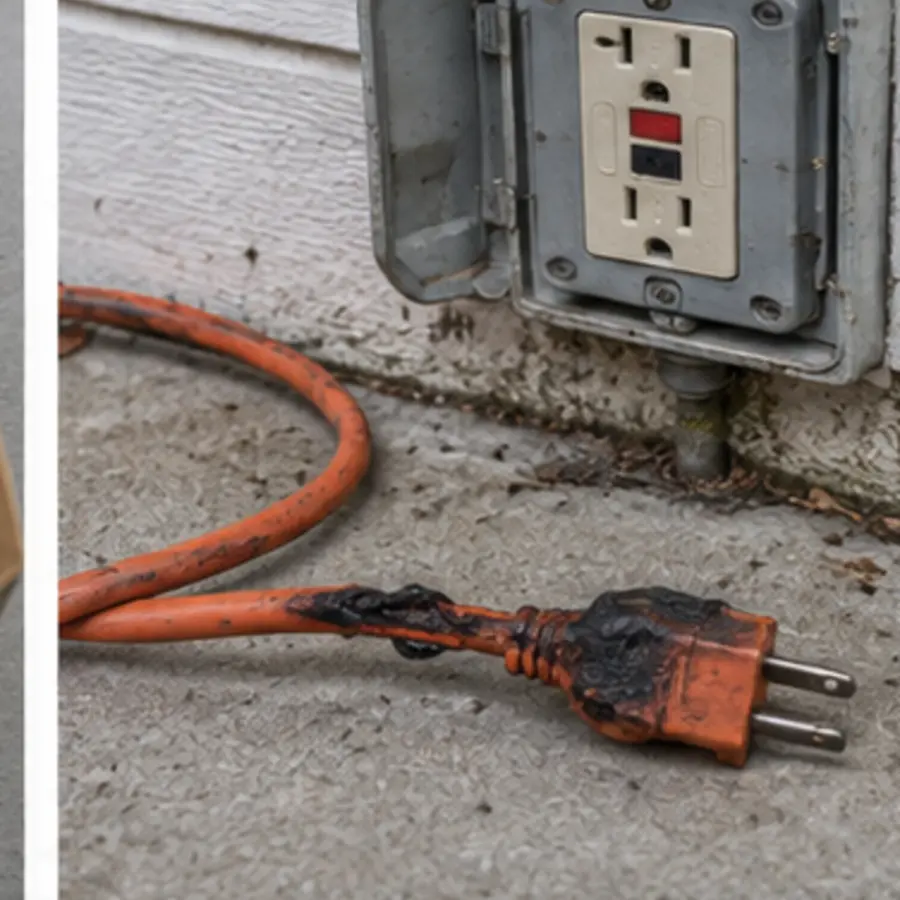
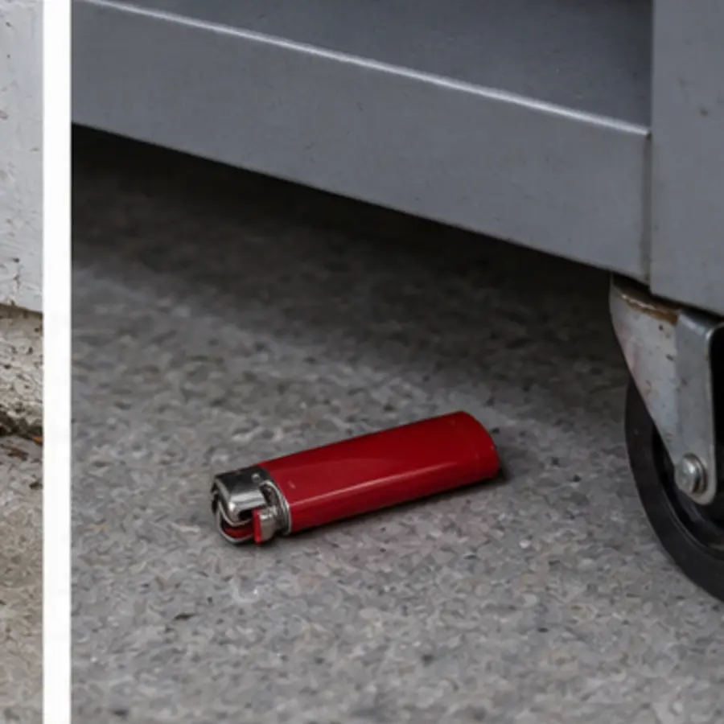
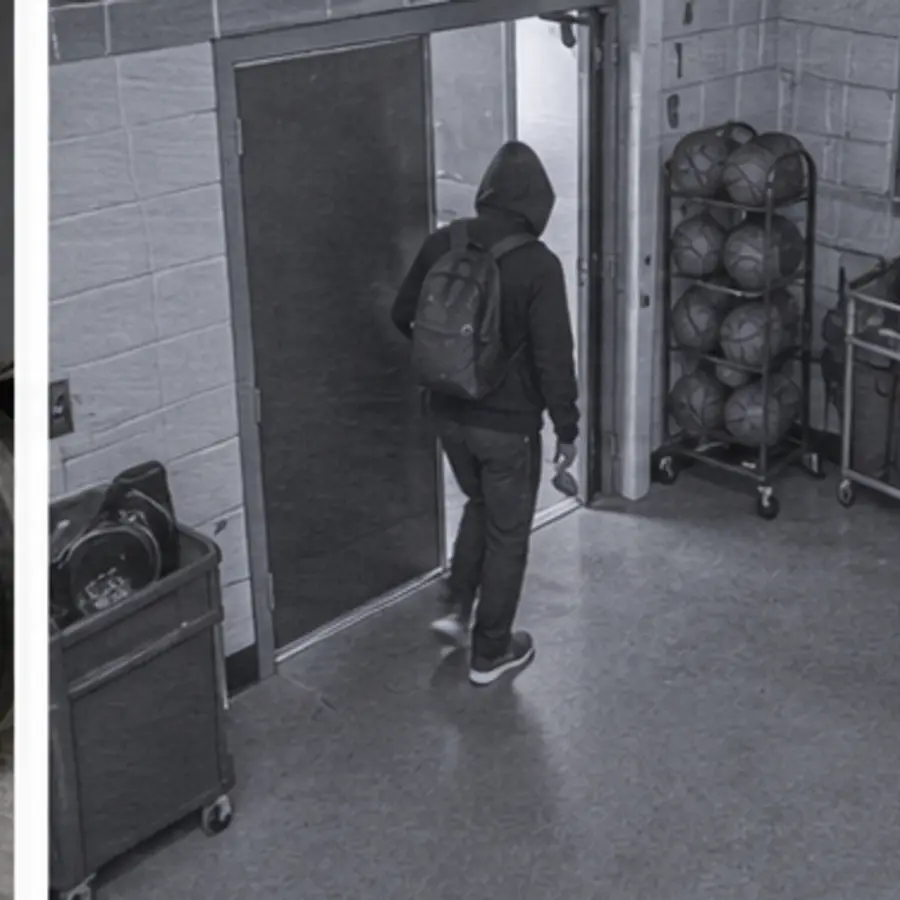
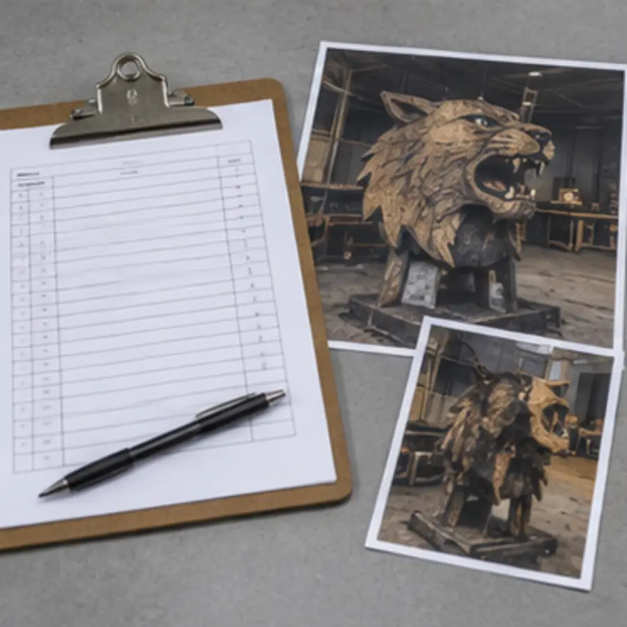
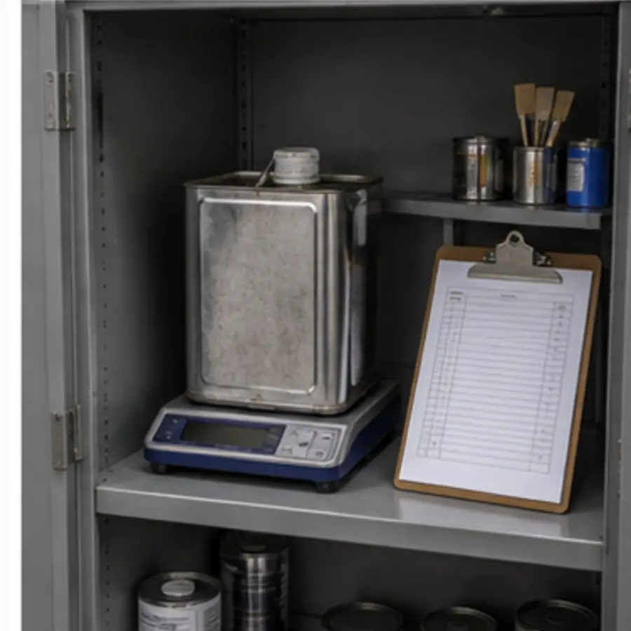
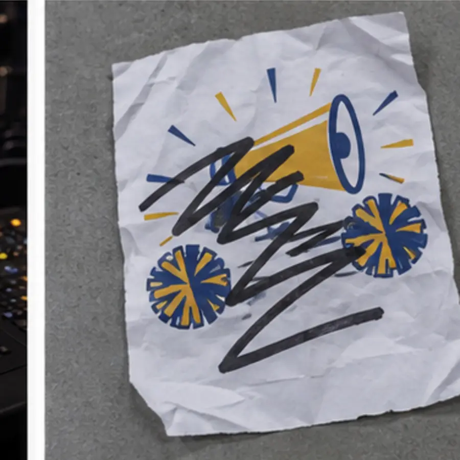
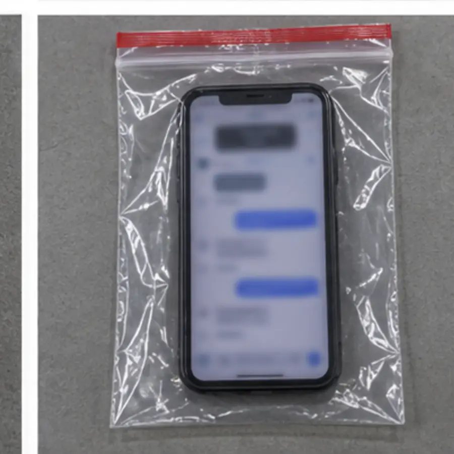

At 5:12 p.m. on Tuesday, a custodian found a burned wooden mascot display beside the stadium equipment shed. The fire was out, but the painted panel, a rolling supply cart, and stored decorations were damaged. Investigators must determine whether the fire was accidental or deliberately/recklessly caused.
Location
Stadium equipment area
Window
4:35–5:12 p.m.
Estimated damage
$460
Your role
Evidence review team
Your assignment
Document what you observe before deciding what happened.
Evaluate how each item was collected and packaged.
Separate reliable evidence from weak or compromised evidence.
Determine the best-supported cause and person of interest.
Classify the likely Georgia offense as a misdemeanor or felony.
Rule of the case: Do not classify the offense from the dollar amount alone. Method and intent matter too.
Initial walkthrough
Stadium equipment area
Open every numbered marker. Record observations separately from inferences.
STADIUM WALKWAY
EQUIPMENT SHED
WOODEN MASCOT DISPLAY
BURN AREA
ROLLING SUPPLY CART
N ↑
2 m
Evidence locker
Examine the submitted items
For each item, consider both what it suggests and whether the procedure protected its integrity.

E-01
Footwear impression
Click or press Enter to examine
E-01
Footwear impression
Its diamond-and-bar heel is consistent with Morgan Davis’s boots.
Collection record
Photographed overall, midrange, and close-up with a scale, then cast. The dried cast was sealed in a labeled padded box.
Click to return

E-02
Charred fire debris
Click or press Enter to examine
E-02
Charred fire debris
Lab screening reports a solvent pattern consistent with paint thinner used by Jamie’s art crew.
Collection record
Warm, wet debris was placed in a used paper bag that previously held art-room cleanup rags—not a clean airtight container.
Click to return

E-03
Extension cord
Click or press Enter to examine
E-03
Extension cord
No electrical arcing appears at the proposed origin. The breaker likely tripped after the fire began.
Collection record
Photographed before removal, air-dried, packaged separately, and labeled at both ends.
Click to return

E-04
Disposable lighter
Click or press Enter to examine
E-04
Disposable lighter
A partial fingerprint is consistent with Morgan Davis’s right index finger.
Collection record
Photographed in place, handled with fresh gloves, secured in a rigid box, sealed, and submitted separately.
Click to return

E-05
Stadium camera image
Click or press Enter to examine
E-05
Stadium camera image
Morgan enters at 4:47 and leaves at 4:54. No one else enters before smoke appears.
Collection record
The original was preserved. A labeled working copy and access log were submitted by the SRO.
Click to return

E-06
Damage estimate
Click or press Enter to examine
E-06
Damage estimate
Repairs total $460: $275 display, $125 cart, and $60 decorations.
Documentation record
Scene photographs, inventory records, and two written estimates support the total. The shed was not damaged.
Click to return

E-07
Solvent inventory
Click or press Enter to examine
E-07
Solvent inventory
The thinner was locked away at 4:36. Its mass is unchanged from the morning inventory.
Documentation record
Jamie and Coach Bell signed the log. Photos show the sealed container and reveal a likely contamination source for E-02.
Click to return
E-08
Console activity log
Click or press Enter to examine
E-08
Console activity log
Alex’s login was active from 4:40–5:15, with commands during the fire window.
Collection record
The original log was preserved and its clock verified. A login alone cannot prove who typed every command.
Click to return

E-09
“Burn it down” flyer
Click or press Enter to examine
E-09
“Burn it down” flyer
The handwritten slogan appears incriminating at first glance.
Collection record
Found 20 meters away. No usable prints, handwriting comparison, or personal connection exists. The slogan referred to the rival team.
Click to return

E-10
Phone message
Click or press Enter to examine
E-10
Phone message
At 4:42 Morgan wrote, “That mascot is done. I’m going to light it up.”
Search record
The SRO used face unlock and searched the locked phone without consent, a warrant, or an identified emergency. The defense moved to suppress it.
Click to return
Recorded statements
People of interest & witnesses
A statement is information—not proof. Compare each claim with the physical, digital, and documentary evidence.
JB
Jamie Brooks Art crew
“We painted the mascot behind the shed and cleaned our brushes with thinner. I locked the supplies in the art room at 4:35. Coach Bell saw our group leave together.”
Access: Used solvent near the area earlier. Claim: Left before the fire window.
MD
Morgan Davis Pep-rally crew
“I went straight to the bus loop after setup. I never went behind the stadium, and I don’t carry a lighter. The display was ugly, but I wouldn’t burn it.”
Access: Helped move the display and knew the area. Claim: Was never at the scene after 4:35.
AT
Alex Torres Stage technician
“I ran the extension cord for the supply cart. It worked during setup. I unplugged the cart at the wall, but the cord stayed outside. At 4:40 I signed into the auditorium lighting console.”
Access: Installed the apparent electrical source. Claim: A digital log can verify location during the fire.
TR
Taylor Reed Student witness
“At about 4:50, I saw Jamie go through the stadium gate wearing a paint-splattered gray hoodie and carrying something red. I’m sure it was Jamie.”
Viewing conditions: Taylor was about 35 meters away, looking through a chain-link fence toward the setting sun. Taylor did not see the person’s face. Identification: Based on the hoodie.
RC
Riley Chen Bus-loop helper
“Morgan was at the bus loop with me from 4:40 until the buses left. The scanner was down, so I wrote Morgan on the paper roster at 4:49. Morgan never went back toward the stadium.”
Relationship: Riley and Morgan are close friends. Claim: The bus roster proves Morgan was away from the scene.
BR
Bus 12 check-in record Supplemental record
4:49 p.m. — Morgan Davis — Route 12 — entered by R.C.
Record conditions: The electronic scanner was offline. Riley, a student helper, wrote the entry; the driver did not witness Morgan board. The bus camera shows Morgan’s assigned seat empty when the bus departed at 5:08.
Quality control
Collection & custody log
Find the procedural problem. Decide how much it changes the case.
Item
Collected
Method / package
Transfers
Seal
E-01
5:29 · J. Patel
Photos with scale; dental-stone cast; dry box
Patel → Locker 2
Initialed
E-02
5:24 · K. Owens
Warm debris placed in a used paper bag from the art-room supply bin
Owens → Patel → Lab
Resealed
E-03
5:41 · J. Patel
Photographed; air-dried; cord and plug packaged separately